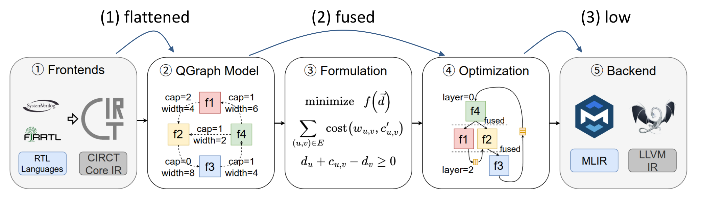

Khronos instructions
Khronos is an RTL simulator with cross cycle optimization. It fuses some redundant registers to reduce memory access, allowing better memory locality and RTL simulation speedup.
Khronos takes FIRRTL and c++ testbench as its input, generating executable simulator as output.
The following picture gives where khronos is in the AHS workflow:
{kind=link}
Khronos Command Cheet Sheet
Compilation Flow:
firtool-ksim --ir-hw $name.fir -o $name.mlir
ksim $name.mlir -o $name.ll --out-header=$name.h
llc-ksim -O2 --filetype=obj $name.ll -o $name.o
clang++ -O2 $name.o $name.cpp -o $name
Generate Example Driver:
ksim $name.mlir --out-driver=$name.cpp -o $name.ll
Generate Intermediate Representations
ksim $name.mlir --out=flattened -o $name.flattened.mlir
ksim $name.mlir --out=fused -o $name.fused.mlir
ksim $name.fused.mlir --in=fused --out=low -o $name.low.mlir
Compilation Workflow of Khronos
The compilation workflow of Khronos is shown in the following figure.
Khronos core compiler ksim takes CIRCT IR as input, therefore, we need to convert the FIRRTL file to CIRCT IR first.
We use firtool (from CIRCT) to translate .fir (FIRRTL) file into .mlir (CIRCT IR) file.
Khronos will take the .mlir file, generating testbench header .h and llvm ir .ll.
The former contains all IO declarations, while the latter contains the logics for simulation.
Finally, we use llc and clang++ to compile and link the testbench and build an executable simulator.
{kind=link}
The following instructions gives a simple example to run the overall khronos workflow.
Prepare the example FIRRTL file, simplefir.fir.
circuit SimpleFIR:
module SimpleFIR:
input clock: Clock
input reset: UInt<1>
input in: SInt<16>
output sum: SInt<16>
reg r1: SInt<16>, clock
reg r2: SInt<16>, clock
reg r3: SInt<16>, clock
r1 <= in
r2 <= r1
r3 <= r2
sum <= add(add(in, r1), add(r2, r3))
Use firtool-ksim to translate it into a CIRCT core IR:
firtool-ksim simplefir.fir --ir-hw -o simplefir.mlir
Use ksim to compile it and generate cpp header for testbench:
ksim simplefir.mlir --out-header=simplefir.h -o simplefir.ll
Use ksim to generate a driver, and modify it:
ksim simplefir.mlir --out-driver=simplefir.cpp -o simplefir.ll
Add peek poke statement in simplefir.cpp:
int main(int argc, char ** argv) {
int cnt = atoi(argv[1]);
reset = 1;
for(auto i = SimpleFIR_reset_ahead; i >= 0; i--) {
SimpleFIR();
reset = 0;
}
auto start = system_clock::now();
for(auto i = 0; i < cnt; i++) {
in = i; // !!! update here
SimpleFIR();
printf("cycle=%d in=%d sum=%d\n" , i, in, sum); // !!! update here
}
auto stop = system_clock::now();
// ...
return 0;
}
Compile and link all resources:
llc-ksim --filetype=obj simplefir.ll -o simplefir.o
clang++ simplefir.cpp simplefir.o -o simplefir
Run the simulator for 10 cycles:
./simplefir 10
Here is the expected output:
./simplefir 10
cycle=0 in=0 sum=0
cycle=1 in=1 sum=1
cycle=2 in=2 sum=3
cycle=3 in=3 sum=6
cycle=4 in=4 sum=10
cycle=5 in=5 sum=14
cycle=6 in=6 sum=18
cycle=7 in=7 sum=22
cycle=8 in=8 sum=26
cycle=9 in=9 sum=30
112 # this is the elapsed time
Intermediate Representations in Khronos
Khronos has many internal steps with multiple IR forms to translate and optimize the RTL design. In this section, we will introduce each level of Khronos IR. The following help command of Khronos shows its IRs:
ksim --help
......
--in=<value> - Input file type
--out=<value> - Output file type
=core - Default circt core IR
=flattened - Ksim high level ir
=fused - Ksim fused ir
=low - KSim low level ir
=llvm - LLVM dialect
=llvmir - LLVM IR
These IR takes important role during the Khronos compilation flow, the corresponding relationship is demonstrated in the following figure:
{kind=link}
The following instructions gives a simple example to expose the internal IR from khronos.
The example FIRRTL file, tree.fir
circuit Tree:
module Tree:
input clock: Clock
input reset: UInt<1>
input in: SInt<16>[4]
output sum: SInt<16>
reg r0: SInt<16>, clock
reg r1: SInt<16>, clock
reg r2: SInt<16>, clock
r0 <= add(in[0], in[1])
r1 <= add(in[2], in[3])
r2 <= add(r0, r1)
sum <= r2
First, translate the fir file to mlir file:
firtool-ksim tree.fir --ir-hw -o tree.mlir
Show the flattened IR:
ksim tree.mlir --out=flattened -o tree.flattened.mlir
Run state fusion algorithm in ksim and show the result:
ksim tree.flattened.mlir --in=flattened --out=fused -o tree.fused.mlir
Lower the fused module to queue ir in ksim:
ksim tree.fused.mlir --in=fused --out=low -o tree.low.mlir
Real Application Evaluation
In this section, we run Khronos on a mediam level design and demonstrate its performance.
Since a full compilation is very time consuming, we extract only the core Mesh structure in Gemmini as input.
The input file Mesh6x6.fir can be downloaded at Mesh6x6.fir.
The Verilator testbench file Mesh6x6.tb.cpp can be downloaded at Mesh6x6.tb.cpp.
Use the following commands to run Khronos:
firtool-ksim Mesh6x6.fir --ir-hw -o Mesh6x6.mlir
ksim Mesh6x6.mlir --out-header=Mesh6x6.h --out-driver=Mesh6x6.cpp -o Mesh6x6.ll
llc-ksim -O2 --relocation-model=dynamic-no-pic --filetype=obj Mesh6x6.ll -o Mesh6x6.ksim.o
clang++ -O2 Mesh6x6.cpp Mesh6x6.ksim.o -o Mesh6x6
Use the following commands to run Verilator:
firtool-ksim Mesh6x6.fir -o Mesh6x6.v
verilator --cc --exe --build -CFLAGS "-O2" Mesh6x6.v Mesh6x6.tb.cpp
Run ksim and verilator to compare their performance:
./obj_dir/VMesh6x6 100000
./Mesh6x6 100000